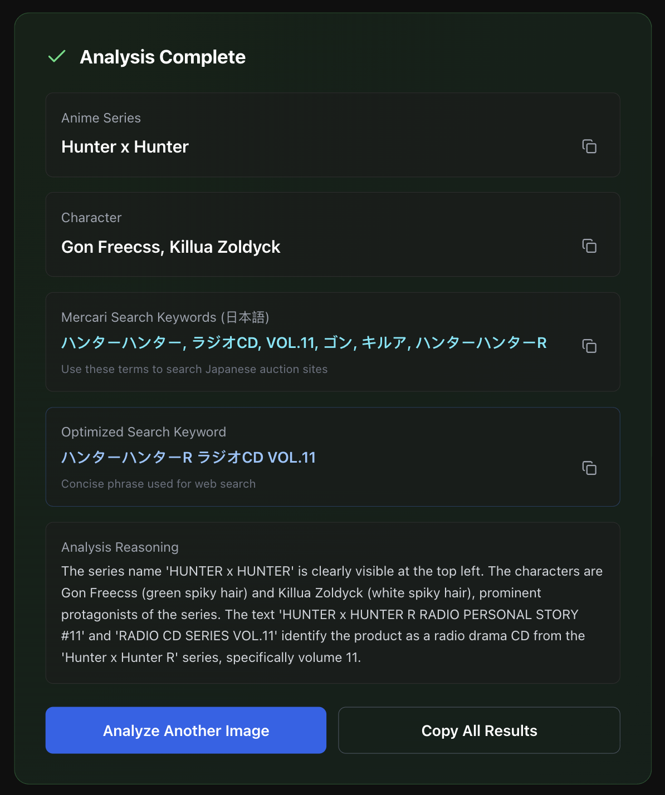
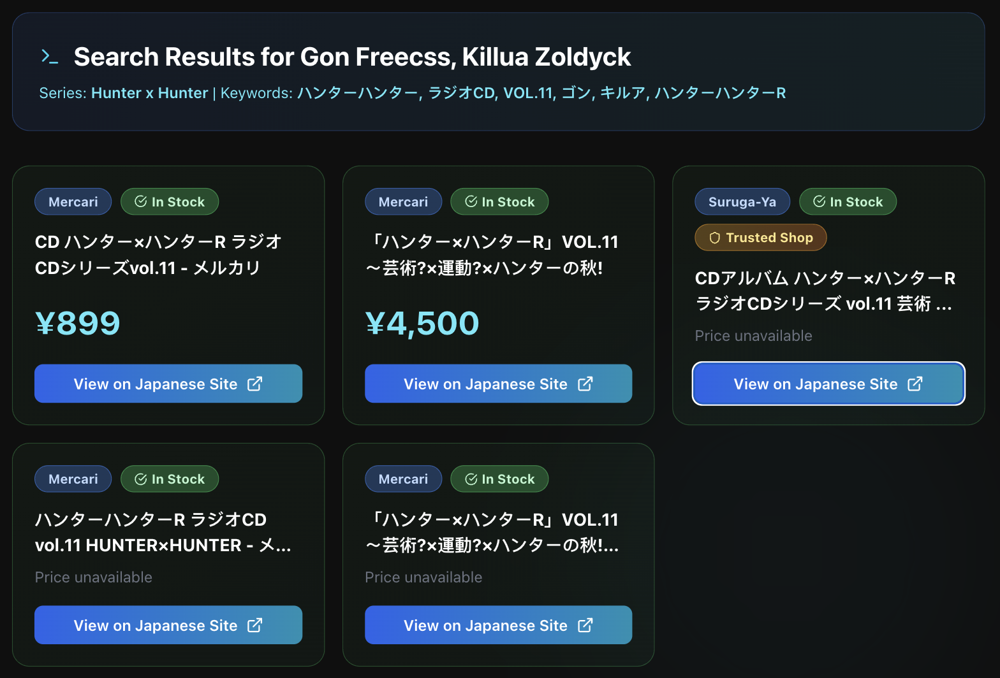

Projects
Lattice
Lattice helps users explore unfamiliar concepts through visual explanations, prerequisite ideas, and conceptual relationships. Concepts can be saved into a personal Knowledge Atlas, creating a lasting record of what they've learned and how their understanding has evolved.
When we encounter an unfamiliar concept, we usually don't just want a definition. We want to understand:
- Why does this matter?
- What should I know first?
- How does this connect to things I already understand?
Most AI tools answer questions in isolation. Lattice explores a different direction.
The Concept Studio turns unfamiliar ideas into visual explanations that reveal the mechanisms, relationships, and prerequisite concepts behind them. The Knowledge Atlas preserves those discoveries over time, creating a personal record of concepts explored, connections made, and understanding gained.
Instead of helping users collect information, Lattice is designed to help them build understanding.
Enter any unfamiliar concept. Lattice generates a personalized visual explanation, prerequisite concepts, and a learning path tailored to the user's existing knowledge.
Users can save concepts they understand. Unlike traditional note-taking systems, Lattice has no folders, no manual organization, and no tagging. Lattice automatically organizes concepts into domains and tracks learning progress over time.
Each concept stores its visual explanation, learning history, familiarity score, and related concepts. The goal is not to remember information. The goal is to remember understanding.
- GPT-powered concept decomposition
- Personalized retrieval using a user knowledge graph
- Concept relationship graph construction
- Dynamic visualization generation
- Long-term cognitive state tracking
- Next.js + TypeScript + FastAPI + PostgreSQL
Generate interactive visual explanations for unfamiliar concepts.
Build a persistent model of user understanding.
Adapt explanations and recommendations based on prior learning history.
Anime Goods Agent
A multimodal agent that turns an image of anime merchandise into structured search actions on trusted Japanese marketplaces. Upload an image and the agent identifies likely series/character/item type, generates Japanese collector-style keywords, and returns ranked results with direct links.

- Language gap — listings are primarily in Japanese
- Unknown terminology — you often don't know the official product name or collector keywords
- Noisy discovery — broad visual search mixes social posts and unrelated sources
- Fragmented marketplaces — trusted sites must be searched separately
- High friction for rare items — small keyword differences can hide the only listing
- Gemini 2.5 image analysis → series, character, item type + reasoning trace
- Keyword grounding → Japanese collector-style keywords optimized for listings
- Scoped web search via Serper.dev → restricted to Mercari and Surugaya
- Result cleaning + ranking → price, condition, availability extraction
- Agent trace UI → transparent step-by-step reasoning display


- Image upload → multimodal identification (Gemini 2.5)
- Japanese keyword generation for collector listings
- Marketplace retrieval via Serper.dev (Mercari + Surugaya only)
- Ranked results table + transparent agent trace
- Phase 1 — Visual grounding augmentation: integrate Lens-style visual search to retrieve visually similar matches, use them to refine keywords, and surface exact / near-exact match results separately in the UI.
- Phase 2 — Retrieval awareness: better availability inference, duplicate suppression, improved condition parsing, and structured query expansion (e.g., 特典 / 非売品 variants).
- Phase 3 — Collector assistance: refine by text intent ("same illustration"), support artwork variants, lightweight listing monitoring, and optional historical price estimation.